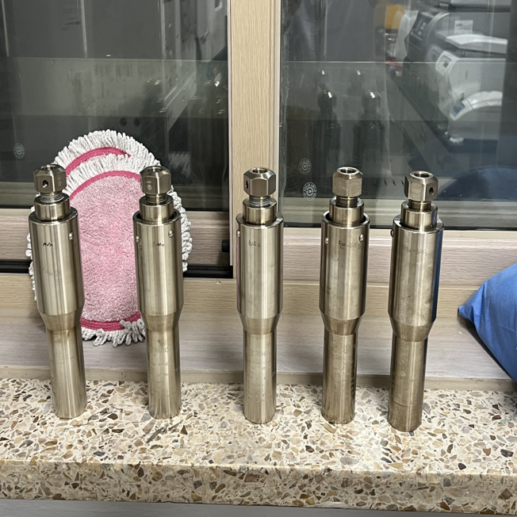
고압반응기(50mL)
Berghof, DAB-2
Electrochemistry · Energy Materials
실험실에서 검증된 아이디어를 실제 작동하는 시스템으로 연결하는 연구를 합니다.
산불 피해 지역에서 열린 러닝 대회에 참여하며,
환경 문제는 추상적인 개념이 아니라
개인의 삶과 직접 맞닿아 있는 문제라는 것을 체감했습니다.
그 경험은 화학 전공 지식을 에너지·환경 문제 해결로 연결해야겠다는 방향성을 더욱 분명하게 만들어 주었습니다.
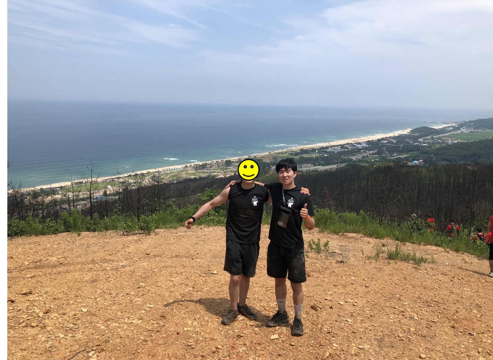
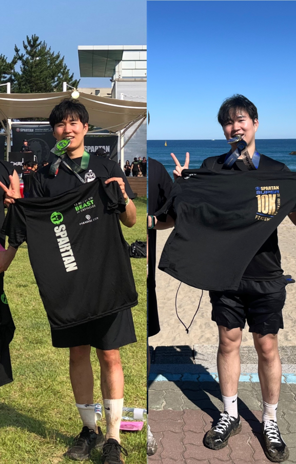
Large-area · Uniform synthesis · Direct seawater electrolysis
산업 규모 수전해 시스템에서는 높은 촉매 활성뿐만 아니라, 대면적 전극 전반에 걸친 구조적 균일성과 장기 안정성이 필수적입니다. 본 연구에서는 탄소섬유 지지체 상에서 발생하는 촉매 성장의 비균일성 문제를 해결하는 데 초점을 맞추었습니다.
대면적 탄소섬유 지지체에서 촉매가 불균일하게 성장하면서, 전극 성능 저하 및 장기 안정성 문제가 발생함.
촉매 성장 조건을 정밀하게 제어하여, 최대 32 × 16 cm² 크기의 전극 전반에 걸쳐 균일한 MoS₂ 합성 전략을 설계함.
균일 합성된 전극은 해수 수전해 조건에서 향상된 전기화학적 안정성을 가져 안정화된 수소 발생 성능을 보임.
전극 합성
구조 분석
(SEM, TEM, XRD)
전기화학
셀 구성
성능 평가
(LSV, EIS, CP)
내구성 및
안정성 분석
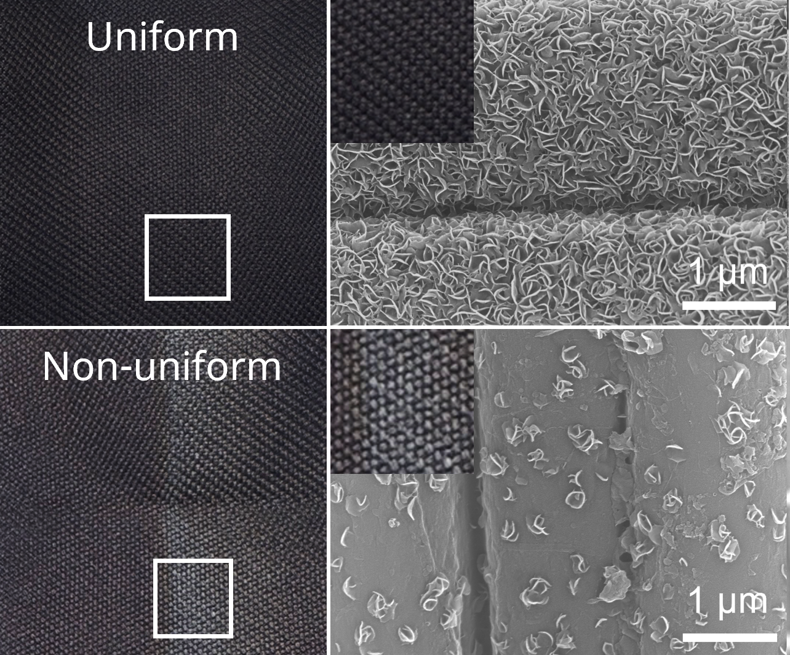
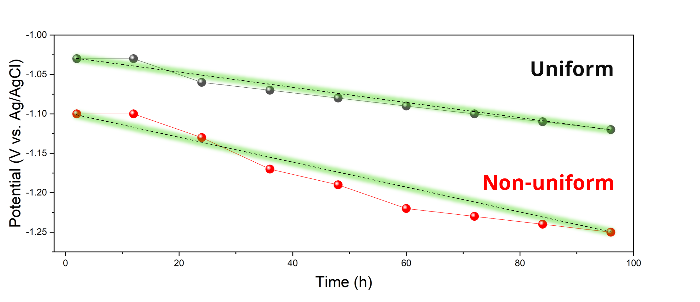
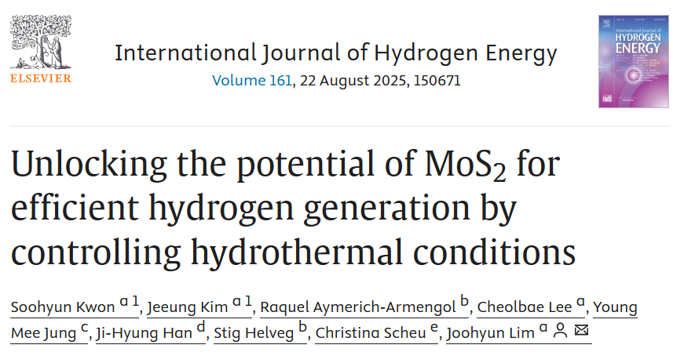
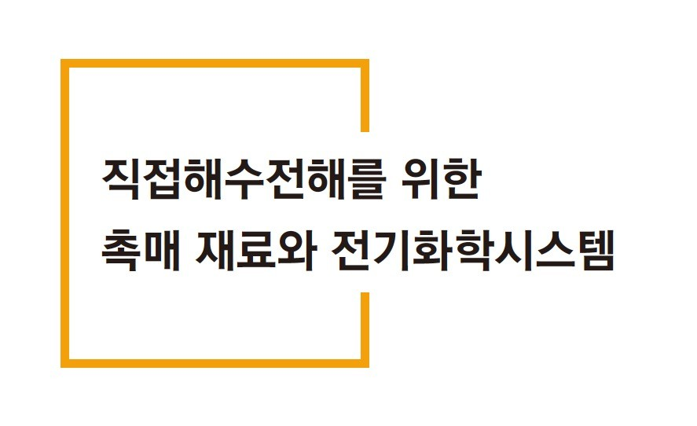

Berghof, DAB-2
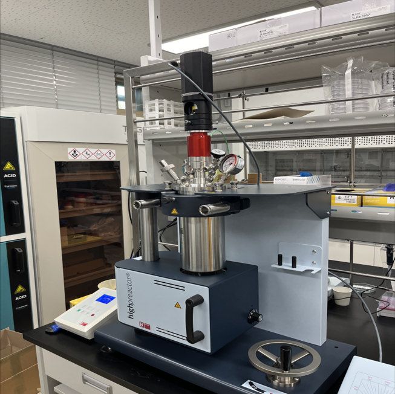
Berghof, BR-1000
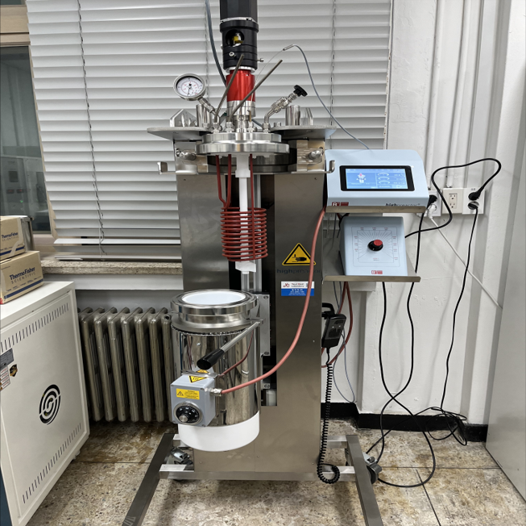
Berghof, BR-4000
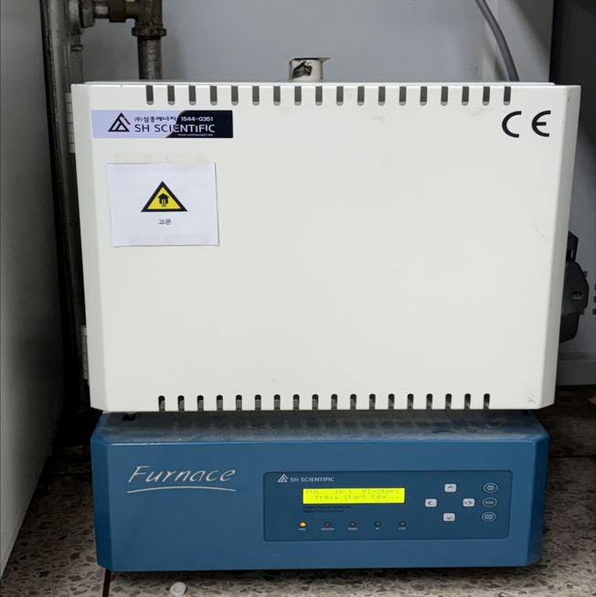
SH Scientific
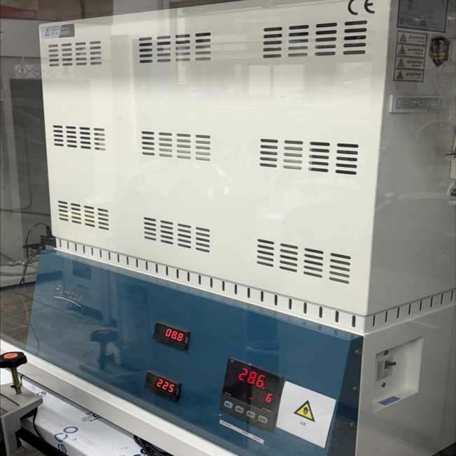
SH Scientific
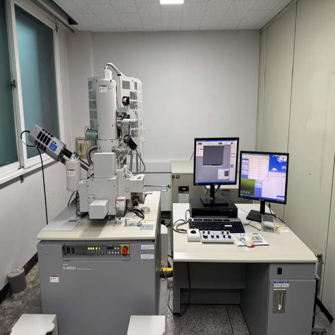
HITACHI, S-4800
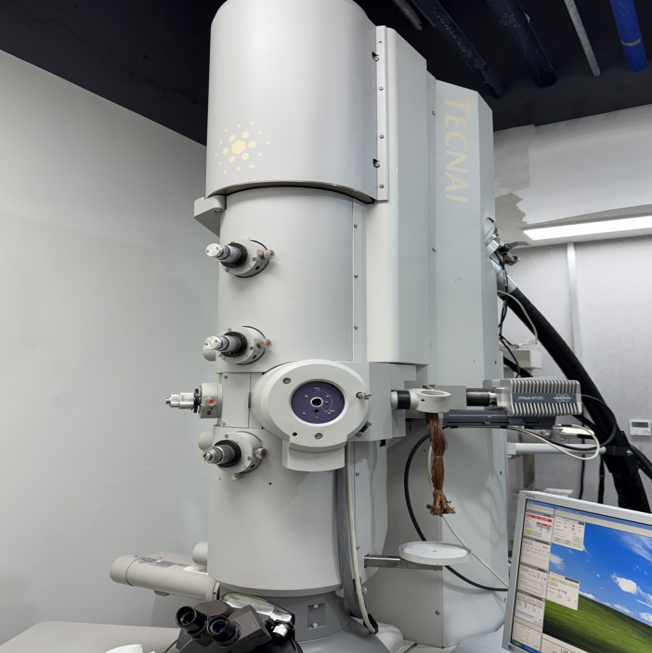
FEI Tecnai G2
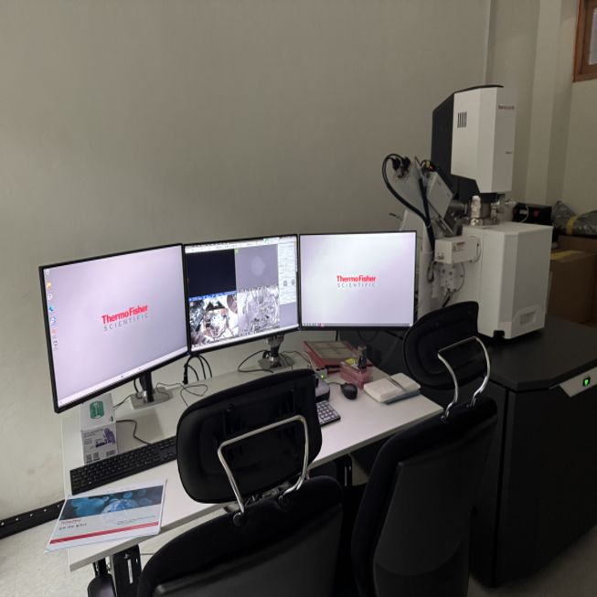
Thermofisher, Quattro
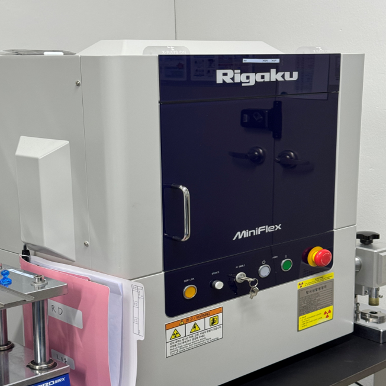
Rigaku, Miniflex 600
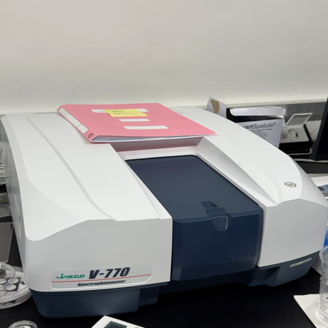
Renishaw inVia
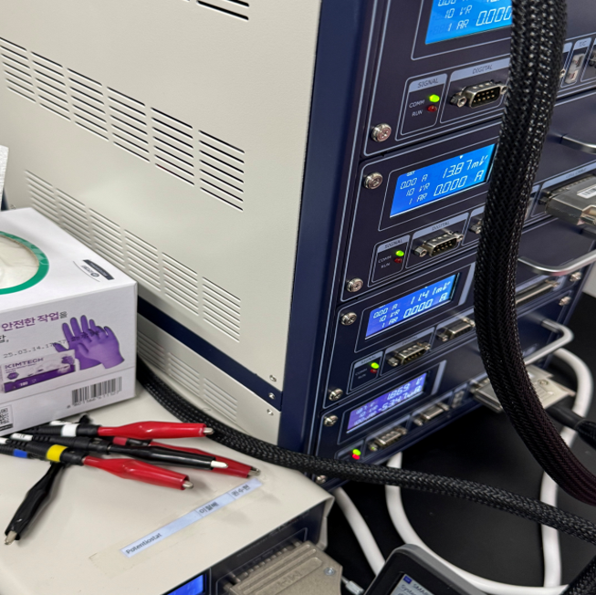
ZIVE, MP2F